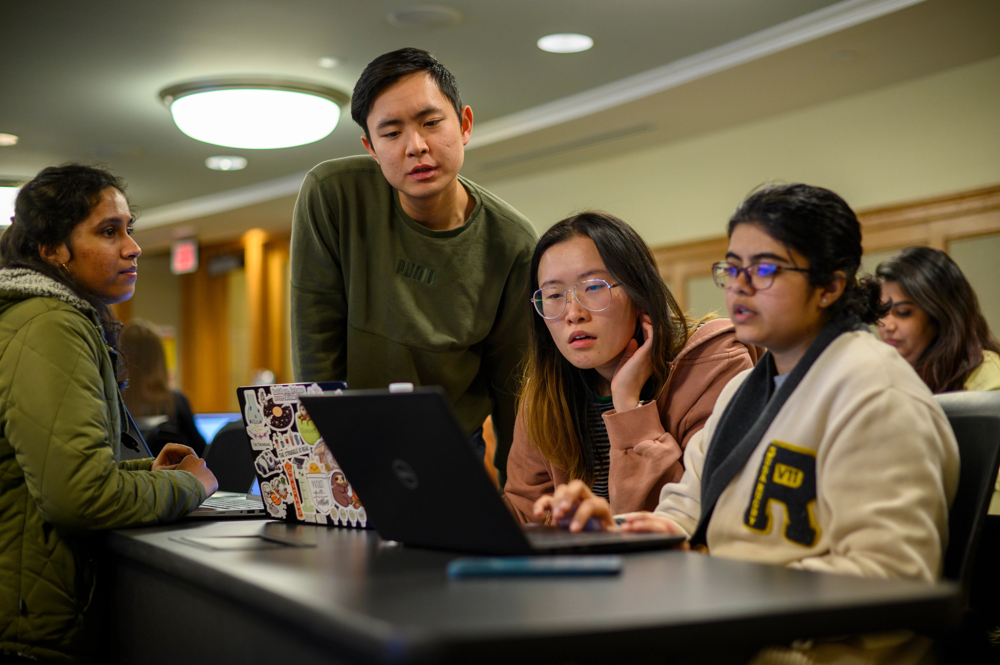

UMSI Tutoring & Academic Support

The Academic Success Team at UMSI is dedicated to supporting students inside and outside of the classroom. This site is dedicated to connecting students to tutoring and academic support resources. Resources covered on this site include:
- UMSI Peer Tutoring
- Programming Peer Tutoring
- Math Peer Tutoring
- Additional Academic Support Resources
- Link to the Peer-to-Peer Tutor Directory
UMSI Peer Tutoring Program

In partnership with our UMSI faculty, the UMSI Peer Tutoring program is an opportunity for UMSI students and students taking UMSI courses to engage with peer tutors and receive assistance and support in UMSI courses. For more information regarding student support and tutoring, please email umsi.academicsuccess@umich.edu.
UMSI Programming Peer Tutoring Information Available for the below courses:
- SI 106 Programs, Information, and People
- SI 206 Data-Oriented Progrmmaing
- SI 506 Programming I
- SI 507 Intermediate Programming
- General Python support
Book Appointments with our Programming Peer Tutors:
FAQ's: UMSI Peer Tutoring Program
How can I schedule a tutoring appointment?
Students can schedule a tutoring appointment with our available UMSI Peer Tutors or UMSI MADS Peer Tutors via their Google Calendar appointment link. Links can be found under the "Math Peer Tutoring" or "Programming Peer Tutoring" page. Please note that on both the Math and Programming Peer Tutor pages there are peer tutors available for SI and SIADS courses.
Am I limited on how many appointments I can make with a UMSI Peer Tutor?
No. Students can schedule multiple appointments with UMSI Peer Tutors. However, if you are finding you need additional support, we encourage you to connect with the UMSI Academic Success Team at umsi.academicsuccess@umich.edu to discuss additional resources.
I am interested in applying to be a UMSI Peer Tutor- who do I contact?
If you are interested in applying to be a UMSI Peer Tutor, please email UMSI Academic Success at umsi.academicsuccess@umich.edu. The UMSI Academic Success Team works closely with our faculty on this process. Typically Peer Tutors are hired at the start of the Fall semester and job postings are available through the UMich Careers website when positions are available.
How are tutoring appointments available?
Typically, the Peer Tutors will determine their schedule, but appointments are available via Zoom throughout the week. Students can schedule an appointment via each tutor's individual calendar link.
I am looking for support, but do not see the course I need help with listed under the Peer Tutoring pages. Can I still receive support?
Our Academic Success Team is constantly looking for ways to support students. Courses rooted in programming and math seem to be the most popular areas students need extra support, but we realize that is not always the case. If you need additional support, please email umsi.academicsuccess@umich.edu, so we can discuss additional support available.
What is the difference between UMSI Peer Tutors and the UMSI Peer-to-Peer Tutor Directory?
The UMSI Peer Tutoring Program is available to students enrolled in UMSI courses and is free of charge to students. UMSI hires these Peer Tutors and they work with our faculty and UMSI Academic Success Team to support students. The Peer-to-Peer Tutor Directory was created in an effort to help connect students looking to offer broad tutoring and a fee may be associated with these services, determined by the tutor. UMSI does not oversee the tutors in the Peer-to-Peer Tutor Directory but simply maintains the Peer-to-Peer Tutor Directory each term.
Additional Academic Support
Sweetland Writing Center: The Sweetland Center for Writing supports student writing at all levels and in all forms and modes. Sweetland offers one-to-one tutoring for undergraduate and graduate students in our faculty-led Writing Workshop and undergraduate Peer Writing Center, and teaches writing courses from the undergraduate to the graduate level. Sweetland also provides support for all multilingual and international undergraduate students.
English Language Institute: ELI exclusively serves members of the University of Michigan community with English for Academic Purposes courses and resources, GSI preparation, and TESOL courses that prepare students to teach English as a second or foreign language.
Math Lab: The Math Lab provides free tutoring for mathematics courses numbered through 217. Though help is not regularly available for other courses, we will attempt to answer the questions of any U-M student who comes to us for mathematics help.
Services for Students with Disabilities: Services for Students with Disabilities (SSD) recognizes disability as an integral part of diversity and is committed to creating an inclusive and equitable educational environment for disabled students.